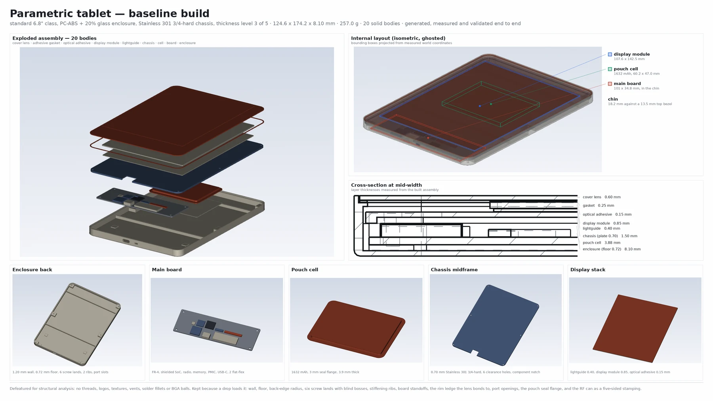
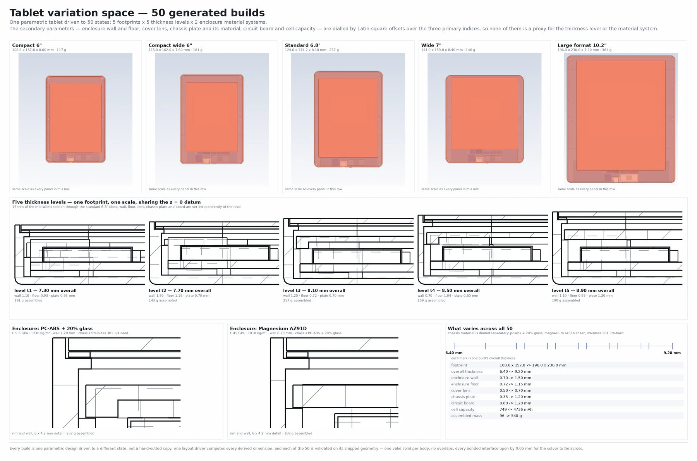

Physics Factory · Cadgen2 · consumer hardware
Introducing Cadgen2 Design, Generate, and Test at Scale
Cadgen2 is the AI-based CAD generation module within BeyondMath’s Physics Factory. It builds production-ready, manufacturable, CAD assemblies from user specifications, generates controlled design variants and defeatured geometry, and extracts DOE parameterizations from imported CAD models. This article presents an end-to-end case study: a tablet assembly generated from a text prompt, 50 design variants derived from it, and explicit structural simulation of each variant.
Current workflow constraints
Engineering-grade CAD production is largely manual. The main costs are:
- Synchronisation across multipart assemblies. A dimensional change must propagate to mating parts, clearances, fastener positions and specification documents. Each propagation path is a potential source of divergence between model and drawing.
- Constraint compliance. Wall thickness, clearance, draft, minimum feature size and material allowables are typically enforced through manual design review. Violations are therefore identified late in the programme.
- Physical evaluation outside the design environment. CAD systems do not report structural performance or cost during modelling. Evaluation requires export to a separate simulation tool, meshing, solving and post-processing, with a cycle time of days per iteration. Most programmes are consequently limited to a small number of candidate geometries.
Cadgen2 is an AI-driven CAD engine that automates assembly creation, modification and specification, and connects to physics-based evaluation so that variants are generated and assessed within a single workflow. Outputs include per-part specifications, GD&T records, a bill of materials and STEP geometry.
Capabilities
- Automated design creation. Generates complete assemblies from a written specification, sketch, reference image or natural-language prompt.
- Precision design variations. Applies natural-language instructions to a fully attributed component specification. A change can be scoped to a single dimension on one part or applied across the full assembly.
- Simulation defeaturing. Prepares geometry for meshing during generation. Load-bearing features are retained; features that increase element count without contributing to structural response are removed.
- Physics AI training data generation. Generates geometry variants across a defined design space, simulates each variant, and formats the results for Physics AI model training.
- End-to-end workflows. Connects to Physics Factory for design space definition, dataset consolidation, Physics AI model training and feedback into subsequent design iterations.
Model generation incorporates automated verification to detect and resolve non-physical geometry, specification inconsistencies and constraint violations. All validation checks execute directly on the generated geometry and exported files.
Creating a geometry
"Can you create a geometry for a tablet computer, it should be defeatured for simulation, but it should contain all the major components: enclosure, screen, internal electronics, battery and connectors?"
From this prompt, Cadgen2 generated a baseline tablet assembly of 20 solid bodies, defeatured for simulation and dimensioned to engineering tolerances. The figure below shows the exploded assembly, the internal layout with measured component envelopes, a mid-width cross-section with layer thicknesses, and the individual defeatured components (bottom row).

The assembly comprises enclosure, chassis midframe, cover lens, bezel gasket, optical adhesive, display module, lightguide, pouch cell, cell pad, populated circuit board with seven packages, USB-C receptacle, two flat-flex cables and a power key. Each body is a separate solid with its own material card.
Dimensions are derived automatically. A single layout model computes all part parameters and mating positions from the variant record, so the multipart assembly stays synchronised when any parameter changes:
- The layer stack is closed: enclosure floor, cell pad, cell, board standoffs, board, chassis plate, lightguide, display module, optical adhesive and cover lens sum to the internal height. A 1 mm reduction in overall thickness must be taken from these layers.
- Cell capacity is computed from total cell volume at a volumetric energy density of 550 Wh/L and a nominal voltage of 3.7 V.
- The cover lens sits in a recess with 0.15 mm side clearance on a 1.20 mm ledge, inboard of a 0.60 mm rim. For a given external width, enclosure wall thickness therefore limits the display active area.
- The USB-C receptacle envelope is fixed at 8.94 × 7.25 × 3.16 mm. Below a minimum internal height the receptacle interferes with the chassis plate; generation then raises an error instead of producing an interfering assembly.
- Board packages are placed with a 1.0 mm minimum pairwise clearance, verified on the built geometry.
Time from prompt to verified geometry, including constraint checks, was under one hour. Outputs are a bill of materials, per-part specifications and STEP files.
Generating variations
"Can you generate 5 different variations of size, each with 5 different material thickness of the enclosure and two different materials? Also show me detailed drawings of the thickness changes"
From this prompt, Cadgen2 generated five footprint classes × five thickness levels × two enclosure material systems: 50 distinct assemblies, comprising 1,000 solid bodies and 1,050 STEP files, each with its own specification and BOM. The request is resolved against an attributed component specification, so each thickness change is applied to the named part dimension and propagated through the layout model. No assembly-level scale factor is used.

- footprint
- 108.6×157.8 → 196×230 mm
- overall thickness
- 6.40 → 9.20 mm
- enclosure wall
- 0.70 → 1.50 mm
- enclosure floor
- 0.72 → 1.15 mm
- chassis plate
- 0.35 → 1.20 mm
- cover lens
- 0.50 → 0.70 mm
- cell capacity
- 749 → 4,736 mAh
- assembled mass
- 96 → 540 g
The secondary parameters (wall, floor, lens thickness and material, chassis plate thickness and material, board thickness, cell capacity) are assigned using independent Latin-square offsets over the three primary indices, so no secondary parameter is tied to a single axis. In production hardware, wall thickness typically depends on the material system: a die-cast magnesium shell is thinner than a moulded one. Applying that coupling here would make wall thickness and modulus collinear across the set, and their effects could not be separated. On the resulting feature table, the maximum absolute correlation between any two features that are not physically inseparable is 0.46.
Validation on the exported files checked three criteria: each body is a valid solid of the expected volume, no two bodies overlap, and every bonded interface has the specified gap. All 50 variants passed all checks.
Assessing the variants
Variants can be evaluated for design, cost or physical performance. For structural analysis, the geometry is generated in solver-ready form using the following settings:
- Defeaturing. Non-structural features were removed: threads, logos, textures, vents, solder fillets, BGA balls and connector internals. Load-bearing geometry was retained: enclosure walls and floor, back-edge radii, six screw lands with blind bosses, stiffening ribs, board standoffs, the lens bonding ledge, port openings, and the pouch seal flange.
- Interfaces. Coincident faces produce ambiguous contact detection, because a node on a shared face is at zero distance from two candidate surfaces. Each bonded interface is therefore modelled with a 0.05 mm gap and closed with a tied contact: 19 per variant, written as solver cards alongside the geometry. On the exported STEP files, all 950 tie gaps measure 0.050 mm to three decimal places.
- Free clearances. A single surface-to-surface self-contact with a 0.02 mm minimum gap covers clearances that close under impact: 0.25 mm between cell and chassis (cell swell and board flexure) and 0.15 mm on the lens-to-recess fit. The self-contact minimum gap is set below the 0.05 mm bond gap so that it does not act against the tied contacts on the same faces.
Each variant is meshed with tetrahedra at per-body characteristic lengths from 0.80 mm (shield stamping) to 3.00 mm (cell), and solved in OpenRadioss as a 1.0 m drop onto a rigid plane. The reference build mesh has 136,905 nodes and 407,692 elements. The corner-first drop runs 80,000 cycles to 1.491 ms with normal termination, 0.1% energy balance error and zero added mass.
Per-frame output (contact and internal forces, von Mises stress, plastic strain, stress and strain tensors) is written in the tensor format used by the training pipeline: 3.8 GB for a single 1.5 ms event.
Optimising the design
For design selection, the same process runs as a screening campaign. All 50 variants were solved on a coarser mesh of approximately 49,000 nodes, with three concurrent runs on one workstation and 11 h 07 min total solver time. All runs closed the energy balance (median error 0.3%, maximum 1.9%). Peak von Mises stress in the display stack ranges from 130 to 1,781 MPa across the set, a factor of 13.7.
Single-parameter sweeps do not reproduce this ranking. The lowest-stress variant combines a magnesium enclosure with a wide, short footprint: peak stress is 1,169 MPa in the shell and 130 MPa in the display stack. The highest-stress variant reaches 1,781 MPa in the display module. Within the best-performing quartile, overall thickness is the only parameter confined to a substantially reduced interval (57% of its sampled range). Cell capacity spans 79% and chassis plate thickness 82%; enclosure wall, floor, cover lens, board thickness and both material moduli span their full ranges. Display-stack stress is therefore governed by parameter interactions, which single-variable studies do not capture.
Limitations: the material models are linear elastic, so the simulation includes no yielding or load redistribution. Peak values at the impact corner are stress concentrations that increase with mesh refinement. The results are valid for relative ranking on a consistent mesh. They are not valid for absolute failure prediction, and peak values should not be compared directly with ultimate strength.
A second case study, real-time modification of imported aerodynamic surfaces on a Formula 1 car, is covered in the companion post.
AI-driven CAD design and optimisation
Cadgen2 is a component of the Physics Factory platform. It generates the geometric variation required for physics-based optimisation. These variants are used to train models built on BeyondMath's foundational Physics AI, and the trained models are used to optimise designs against simulated physical response instead of a proxy metric.
Variant requirements differ by use case. Design exploration on a released product typically requires a small number of controlled variants with correct specifications and a BOM. A training campaign requires several hundred decorrelated variants with solver decks attached. Both are generated from a parameter table applied to a single layout model. Each variant is stored as a parameter state of a few hundred bytes and rebuilds to identical geometry.
Get access
Generate and simulate design variants
Physics Factory covers geometry generation, simulation and model training on your own data, for structural, CFD, thermal and other physics.
Get access